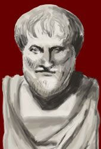

Aristotle
384 - 322 BC

Aristotle was a philosopher. He was a pupil of Plato's and later he became the teacher of Alexander the Great. Like Plato, Aristotle was to have a lasting influence on philosophy.
He believed that one should use observation and experience to learn the truth. This type of research is used by scientists today.
Aristotle wrote on a great number of topics. He was interested in the study of animals, politics, the human mind, poetry, the workings of the human body and ethics (the study of right and wrong).
|